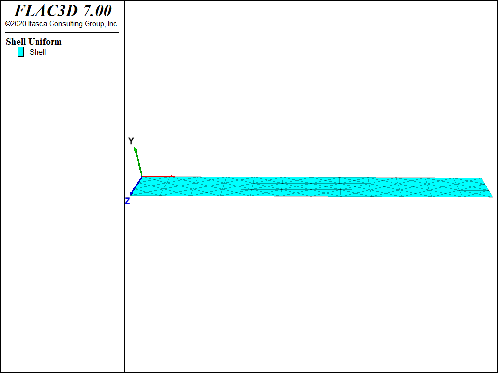
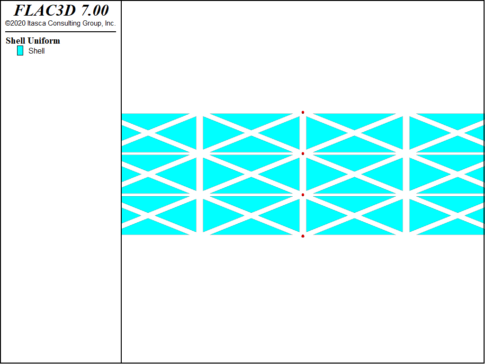
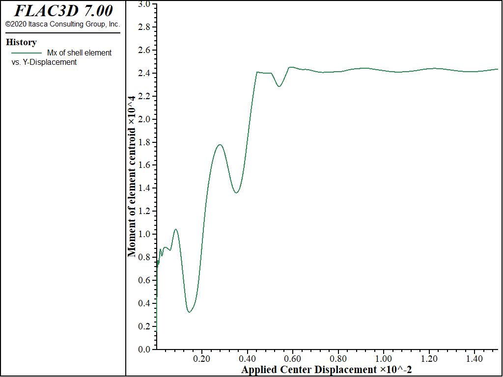
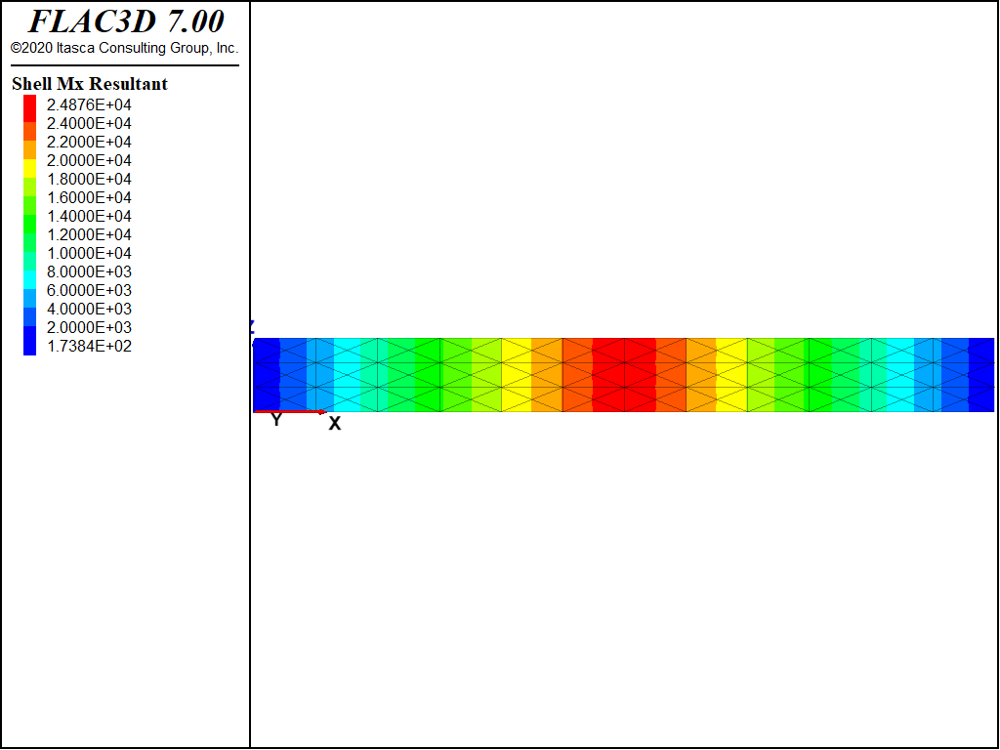
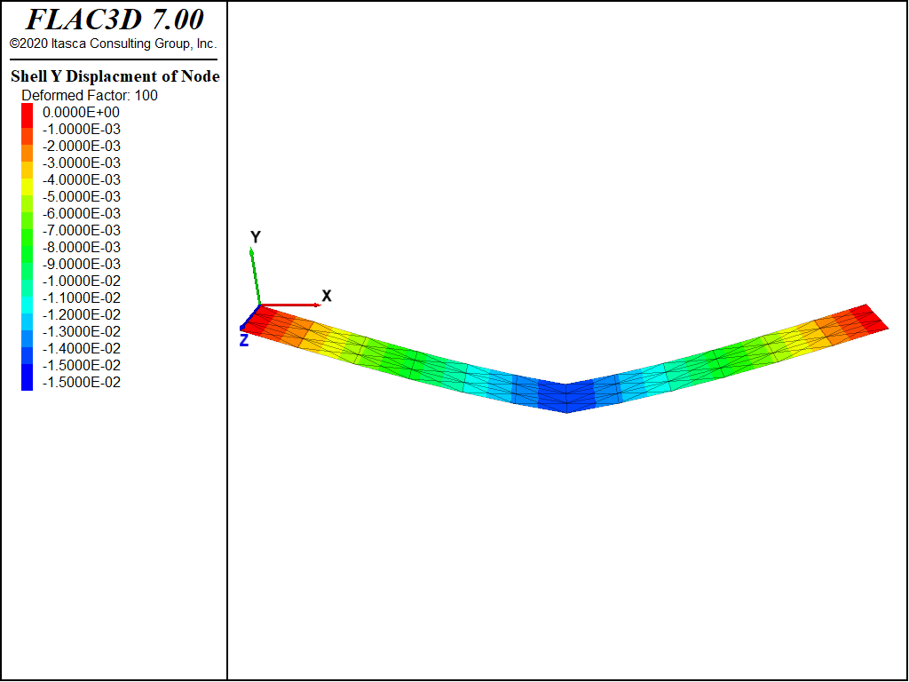

壳结构中塑性铰的形成
问题描述
注意
要在 FLAC3D 中查看该项目，请使用菜单命令 。选择 “Structure/Shell/PlasticHinge” 并选中 “PlasticHinge.f3prj” 载入。所用 主数据文件（main data files） 示于本例末尾。其余数据文件可在该项目中找到。
本例演示用 FLAC3D 计算壳结构中形成的塑性铰线的起始与后续行为的过程。用壳单元重现 梁结构中塑性铰的形成（Plastic Hinge Formation in a Beam Structure） 所述的双节点法。沿铰线创建双节点，然后适当地把它们连接起来。双节点允许在达到极限塑性弯矩时出现转动不连续。对壳单元，没有可与单节点法（用 结构梁单元属性塑性弯矩（structure beam property plastic-moment） 命令）类比的、可用于模拟梁单元塑性铰的方法。
所考虑的问题在 梁结构中塑性铰的形成（Plastic Hinge Formation in a Beam Structure） 中描述，并示于 图 1（Figure 1）。FLAC3D 模型模拟长 10 m、高 1 m 的梁（见 图 2（Figure 2））。采用交叉对角网格模式以确保响应对称，并采用 DKT-CST 杂交壳单元（DKT-CST Hybrid Shell Element） 以承受大应变模式下破坏后将发展的膜荷载。杨氏模量与泊松比分别设为 200 GPa 与 0。壳厚度设为 0.133887 m，使二次矩 \(I\) 等于 200 × 10-6 m4。

图 1：承受单个集中荷载的简支梁。


图 2：用壳单元模拟塑性铰示例的 FLAC3D 模型。
发出两条独立的 structure shell create 命令，产生含两个独立壳段的模型：一个用于梁的左半，一个用于右半。图 3（Figure 3） 示出标有节点位置的壳单元；图 4（Figure 4） 示出壳单元轮廓并标出连接位置。注意沿梁中心线有一组重叠的八个节点，由节点-节点连接相连。



图 4：壳单元——连接位置以球表示。
现在我们用以下命令在这些节点之间创建适当的连接
struct node join
struct link attach rotation-z=normal-yield ; 将 z 转动自由度改为 normal-yield
; 设置这些弹簧的参数
struct link property rotation-z area=1.0 stiffness=5e9
struct link property rotation-z yield-compression=8.33e3 yield-tension=8.33e3 range position-x 5.0 position-z 0.3 0.7
struct link property rotation-z yield-compression=4.17e3 yield-tension=4.17e3 range position-x 5.0 position-z 0.0
struct link property rotation-z yield-compression=4.17e3 yield-tension=4.17e3 range position-x 5.0 position-z 1.0
该命令在与另一节点位于同一位置的每个节点上创建节点-节点连接。连接示于 图 4（Figure 4），默认在所有方向上刚性。下一条命令影响所有连接：把 \(z\) 转动方向的附着条件设为法向屈服弹簧，三个平动方向与 \(x\)、\(y\) 转动方向设为刚性，并指定在 \(z\) 转动方向插入法向屈服弹簧。最后几条命令按下述方式设置这些法向屈服弹簧的性质：把面积全部设为一，并把抗压与抗拉屈服强度都设为所需塑性弯矩承载力（依据各节点对应的 tributary 长度）。总塑性弯矩承载力为 25 kN-m，因此给两个中心弹簧赋 8.33 kN-m，给两个端部弹簧赋 4.17 kN-m。最后把弹簧刚度设为足够大的值，使弹簧变形相对壳变形很小。我们取 5 × 109，约等于中心左侧节点的转动刚度。
双节点已适当互连后，通过限制 \(y\) 方向平动在梁端指定简支。对右侧部分的四个目标节点施加常竖向速度，并在计算中监测靠近中心处某单元形心的力矩，以确定何时达到限值。
我们发现已达到力矩限值（见 图 5（Figure 5））。图 6（Figure 6） 显示梁中心处的值为 24.89 kN，与所指定弯矩承载力相差在 1% 以内。图 7（Figure 7） 显示位移已发展出不连续。


图 5：靠近中心某单元形心处的力矩对施加的中心位移。


图 6：壳上的 Mx 等值线。


图 7：壳在放大变形图上的 y 向位移。
数据文件
PlasticHinge.dat
model new
model large-strain off
model title 'Plastic hinge formation (double-node method with shell elements)'
; 创建两组壳单元
struct shell create by-quadrilateral (0,0,0) ( 5,0,0) ( 5,0,1) (0,0,1) ...
size (6,3) id=1 element-type=dkt-csth ...
cross-diagonal group 'Left'
struct shell create by-quadrilateral (5,0,0) (10,0,0) (10,0,1) (5,0,1) ...
size (6,3) id=2 element-type=dkt-csth ...
cross-diagonal group 'Right'
struct shell property isotropic=(2e11, 0.0) thick=0.133887
; 创建连接，默认六个自由度均为刚性
; 在位置重合的节点之间
struct node join
struct link attach rotation-z=normal-yield ; 将 z 转动自由度改为 normal-yield
; 设置这些弹簧的参数
struct link property rotation-z area=1.0 stiffness=5e9
struct link property rotation-z yield-compression=8.33e3 ...
yield-tension=8.33e3 range position-x 5.0 ...
position-z 0.3 0.7
struct link property rotation-z yield-compression=4.17e3 ...
yield-tension=4.17e3 range position-x 5.0 ...
position-z 0.0
struct link property rotation-z yield-compression=4.17e3 ...
yield-tension=4.17e3 range position-x 5.0 ...
position-z 1.0
; 边界条件
struct node fix velocity-y rotation-x rotation-y range position-x= 0.0
; 左端采用滚动支承
struct node fix velocity-y rotation-x rotation-y range position-x=10.0
; 右端采用滚动支承
struct node fix velocity-z rotation-x rotation-y
; 约束非梁变形模态
struct node fix velocity-y range position-x 5.0 group 'Right'
struct node initialize velocity-y -5e-7 local ...
range position-x 5.0 group 'Right'
; 历程
struct node history displacement-y position (5.0,0,0.6667)
struct shell history resultant-mx surface-x 1,0,0 position (4.861,0,0.5)
; 运行模型计算循环
struct damping combined-local
model cycle 30000 ; 总位移为 0.015
model save 'PlasticHinge'
⇐ Cantilever Beam with Applied Moment at Tip — Shell Elements | Isotropic Rectangular Plate with Applied Pressure ⇒
| 这些内容对您有帮助吗？… | FLAC3D © 2019, Itasca | 原文更新于 2020 年 10 月 8 日 |